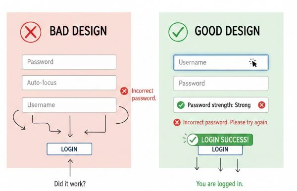
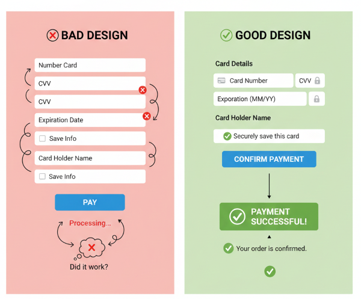
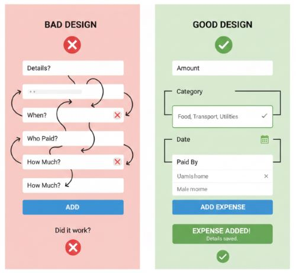

Introduction
This page shows how good and bad UI designs affect user performance and cognitive load, evaluated using Norman's Action Cycle, GOMS, and KLM (Dix et al., Ch. 9 & 12).
Example 1: Login Form
| Stage | Bad Design | Good Design |
|---|---|---|
| Goal | Login quickly | Login quickly |
| Form Intention | Confusing labels, unclear tab order | Clear labels, logical tab order |
| Specify Action Sequence | Guess input order | Follow labels, auto-focus first field |
| Execute | Frequent typing errors | Typing accurate with cues |
| Perceive System State | No feedback on errors | Immediate feedback on incorrect password |
| Interpret System State | User unsure if login failed | User understands errors immediately |
| Evaluate | Multiple retries, frustration | Quick successful login; reduced cognitive load |
Example 2: Payment / Checkout Form
| Stage | Bad Design | Good Design |
|---|---|---|
| Goal | Complete payment | Complete payment |
| Form Intention | Long form, unclear labels | Short form, clear labels, grouped fields |
| Specify Action Sequence | Random input order | Logical flow: card → expiry → CVV → confirm |
| Execute | Typing errors, mis-clicks | Smooth input with focus & validation |
| Perceive System State | Payment confirmation delayed | Immediate confirmation, visual feedback |
| Interpret System State | User unsure of success | User understands outcome clearly |
| Evaluate | Errors may require repeating process | Efficient, fewer errors, reduced cognitive load |
Example 3: Add Expense Option
| Stage | Bad Design | Good Design |
|---|---|---|
| Goal | Add expense quickly | Add expense quickly |
| Form Intention | Confusing labels, unclear fields, too many steps | Clear labels, grouped fields, minimal steps |
| Specify Action Sequence | User guesses input order (amount, date, category) | Logical input flow: amount → category → date → payer selection |
| Execute | Typing errors, mis-clicks, selecting wrong payer | Smooth input with auto-focus, dropdowns for category and payer |
| Perceive System State | No confirmation; user unsure if expense added | Immediate visual feedback: expense added, highlighted in list |
| Interpret System State | User unsure if entry is correct | User can verify expense instantly; clearly sees payer, amount, date |
| Evaluate | May need to re-enter expense, frustration | Task completed efficiently with reduced cognitive load and errors |